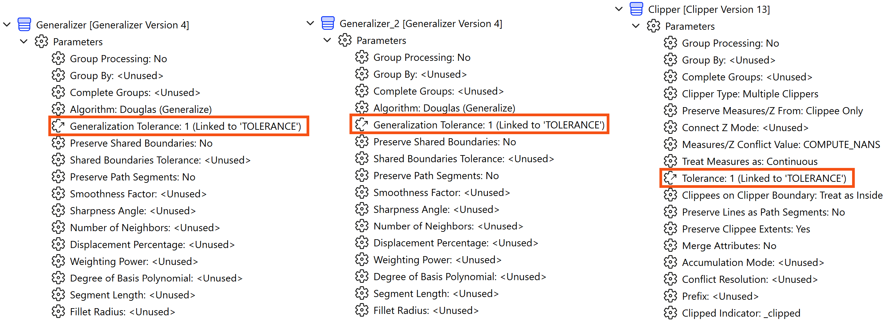
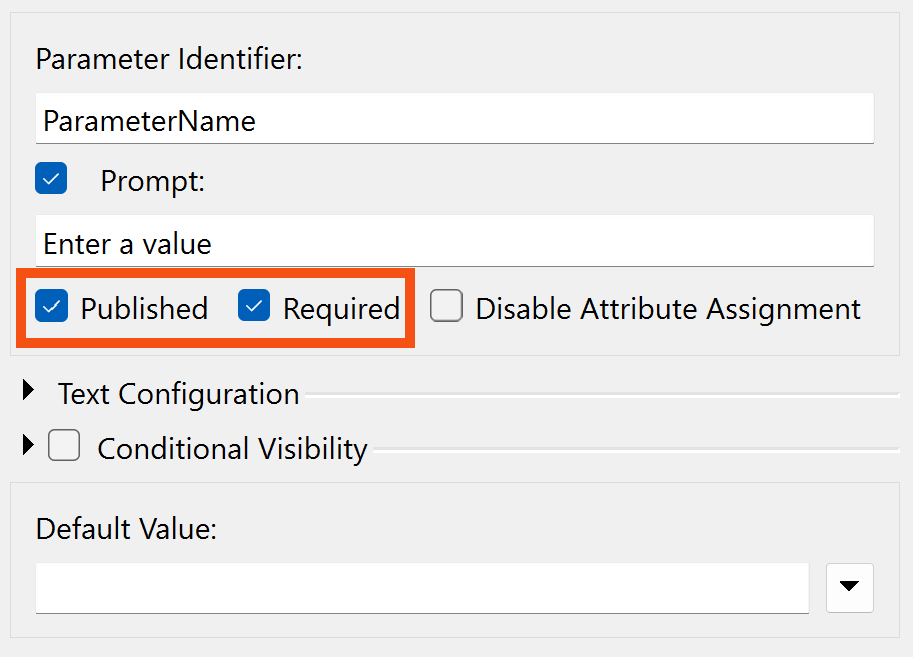
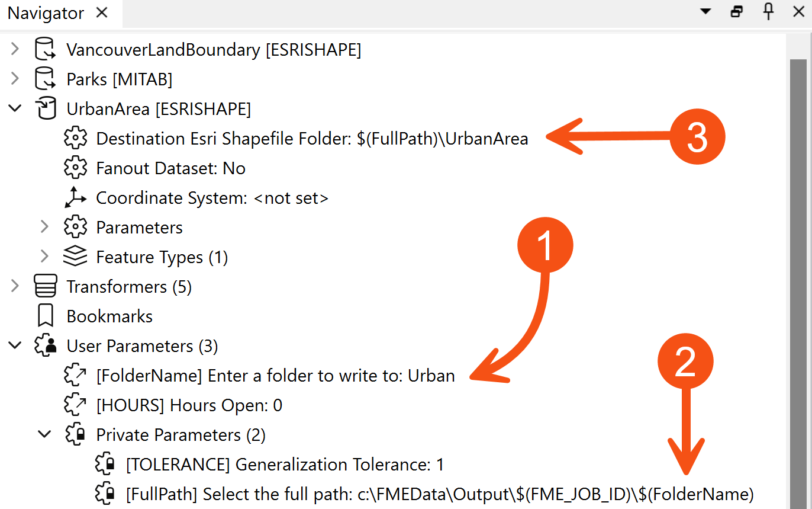
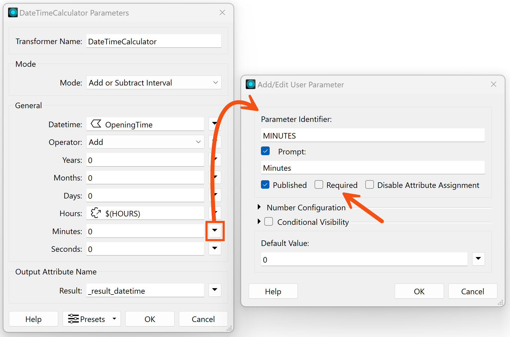

After completing this lesson, you’ll be able to:
Shared and embedded parameters are not specific types of parameters; instead, they refer to two different ways parameters might be used.
Scripted parameters are a way to include Python or Tcl code in the way a parameter is defined.
There is no limit on the number of times a user parameter can be used or linked to an FME parameter. The value obtained from a user parameter can be used as often as required.
A parameter used in two or more places can be described as a shared parameter.
For example, a workspace has a user parameter called TOLERANCE (here being used inside a Generalizer):
However, the workspace author has decided to apply the same parameter in three places in total: two Generalizers and a Clipper:

The advantage is that the same value can be used without the user entering it multiple times.
You might wonder how to tell where FME uses the user parameters you create. What FME parameters is it linked to?
To find out, right-click the parameter and choose the option to Show References:
This applies whether the user parameter is referenced by one FME parameter or many. If you wish to always show these references without having to use "Show References," right-click User Parameters and choose Always Show References:
Sometimes, in FME, parameter values need to be constructed from multiple components. When one parameter is constructed to include the value of another parameter inside it, this is called Embedding Parameters.
For example, here, the name of a file is constructed from two user parameters: one is a fixed output path, and the other is a user's name:

The technique is called embedding because the user parameters - UserName and OutputFolder - are embedded inside the FME parameter (Target Filename).
Scripted parameters go one step further than embedded parameters. Instead of simple concatenation, a scripted parameter allows a full Python or Tcl script to construct a value.
For example, this Tcl script creates a filename from a fixed path and an embedded user parameter. The script is used to test whether the workspace is being run on a Windows or Unix system so that it can set the output path accordingly:
set realname ''
if {[string match 'C:*' $FME_MacroValues(FME_HOME)]} {
set realname 'C:\Output\'+$FME_MacroValues(UserFileName)
} else {
set realname '/Output/'++$FME_MacroValues(UserFileName)
}
return realname
Note that the script must include a return statement to return a value to the parameter. A scripted parameter is purely for use by an author. The user is not prompted for a value, as it would be absurd to expect them to enter Python code when a workspace runs!
Use the ‘print’ command (in Python) or the ‘puts’ command (in TCL) to write from the script to the FME log file.
When a user parameter is created, two checkbox options exist; one is labeled Published and the other Required:

This option aims to expose or hide the parameter from the end user. The end user can enter a value if the Published box is checked. If the box is unchecked, they will not be prompted to enter a value, and the parameter will be treated as "private."
Private parameters have two uses.
Firstly, a private parameter allows a workspace author to create a shared parameter without exposing it to the user.
For example, a private parameter is used if they want to supply the same tolerance value to several Snapper transformers – but the author, not the user, sets that value.
The second use of a private parameter is to embed a user's partial input into a larger parameter.
For example, the workspace author prompts the user to enter a folder in which a file is to be written (1). The author then defines the full folder path as a private parameter (2) as a mix of a fixed path and a job ID:

Finally, (3) the Private Parameter is embedded inside the FME parameter for the destination Shapefile dataset.
You might have noticed that many FME Flow Parameters are available to workspace authors who intend to deploy their creation on an enterprise scale.
If you look at the above screenshot, a Flow parameter (FME_JOB_ID) has been embedded into the FullPath private parameter.
The Required checkbox tells FME whether the user parameter must be filled out before the workspace will run.
Here, for example, the DateTimeCalculator is being used to calculate the time a park closes, given its opening time and user input on how many hours and minutes it is open:

The MINUTES user parameter does not have Required checked, meaning it is optional. For example, the user can enter that the park is open for eight (8) hours and ignore the MINUTES parameter.
Alternatively, a user parameter might provide a tolerance value to a Generalizer transformer. In this case, the author will want to turn off this checkbox and make the parameter compulsory. A Generalizer that is not given a tolerance value will usually fail, and making tolerance compulsory is one way to prevent that.\
⭐ New for FME 2023.0: you can now control if user parameters appear to the end-user through conditional parameters. This feature, configured under Conditional Visibility in the Add/Edit User Parameter dialog, allows you to customize and validate user input. The end result can be closer to a native FME transformer; for example, you can include a checkbox that, when checked, reveals additional parameters.
We are continuing to add functionality here in later releases of FME, so keep an eye on the Knowledge Base and documentation for additional information.